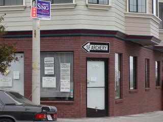
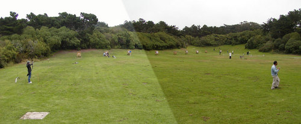
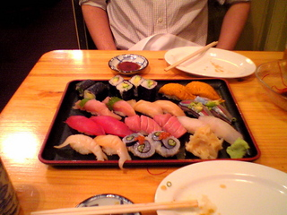
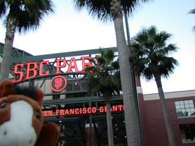
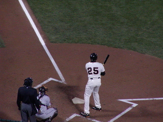
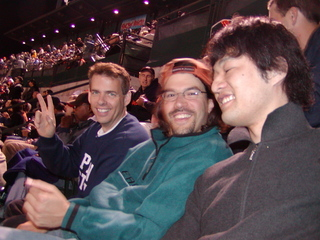
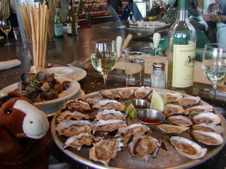

2004年11月12日
2004年11月07日
Just married!
初めて入籍というものをしてみた。
ちょっと都合により書類上の手続きだけ早めに。
自分の中で結婚というイメージは
・結婚式
・入籍
・共同生活
・結婚指輪
がセットになっているので手続き上の話だけでは結婚したという実感はいまひとつ。少しずつ積み重ねていこう。
ほとんど口頭で報告できていないけどお世話になっている方々には追々・・・・。

17:10 提出の瞬間(ジャージ姿でかなりラフ)
2004年11月04日
大統領はブッシュに
個人的には言うことがコロコロ変わって、単にアンチブッシュ票集めしかしていないケチャップくさい人よりは良かったかな。
会社はアメリカ大使館のすぐそばなのでまた検問が厳しくなるだろう。テロとか発生しないと良いけど・・・。
2004年11月02日
献血
今日は新宿へ献血をしに行った。
海外に行っていた場合は帰国から３週間経たないといけない事を知っていた。前回10月3日に帰国したので大丈夫だろうと思っていたんだけどもルールが変わって帰国から４週間空ける必要があるとのこと。あれ？今日は11月2日だ・・・門前払い？
針を刺される覚悟をしながら刺されないのは刺されるよりも心臓に悪い、勘弁してくれ。
・日本赤十字社ホーム ＞ 参加・協力のご案内 ＞ 献血 ＞ 献血条件 > 帰国日（入国日）当日から4週間以内の方
http://www.jrc.or.jp/sanka/blood/terms/terms08.html
、と思ったけども４週間とは28日の事らしくぎりぎり献血できることに。
針を刺されるところ、抜かれた血など怖くてみられなかったけども、５回目になる今回はさすがに、ようやく余裕がでてきて抜き取った血が入っているバッグを見ることができた。400mlってかなりの量だ！当たり前だけれども500mlのペットボトルに近い量がある！今まで2リットル抜かれたと思うとぞっとする。役立ててください、赤十字。
このバッグがそのまま吊されて輸血されるイメージがあるけど実際は遠心分離器にかけられて成分別に分離して利用されるそうだ。
白血球とかはそのまま輸血され、血小板は成分献血で結構まにあうので血液製剤とかのお薬になるのだとか。ふむふむ
献血のあとのお楽しみはいつもドーナッツ＆アイスクリーム。
アイスクリームはいつものハーゲンダッツではない銘柄になっていた。残念。
赤十字社では献血以外にも貢献する方法を用意しているらしい。
・日本赤十字社ホーム ＞ 参加・協力のご案内 ＞ 赤十字ボランティア
http://www.jrc.or.jp/sanka/volunteer/index.html
献血は自分の身を切り取って他人に献上するというある意味究極のボランティア活動だと思うけど針が刺さる、血を見るのは怖いのでためらう人も多いだろう。
っていうか私はかなりダメな方。まじ怖い。機会があったらこちらも参加してみようかしら。
自動車保険は年末調整の保険料控除対象？
ではないらしい。
毎年忘れているのでメモ。
・三井ダイレクトTOP > Q&A; > その他 > 自動車保険の保険料は損害保険料控除の対象になりますか？
http://www.mitsui-direct.co.jp/help/webra/hel05_01.htm
2004年10月26日
water leak
朝イチで区役所に行ったら定時にちょっと間に合わそうだったので今日は午前休に。
休んだついでに洗面所で水が漏っているのを不動産へ通報、すぐに業者を呼ぶけど今日は家にいるか？、とのこと。
たまにはゆったり、ということで今日は１日休みに。どうせ使いきらない年休はちょくちょく消費しないと。
水漏れ現場
不動産へ電話をしたのは10:00ごろだけど昼過ぎになっても業者から連絡がない。もう一度不動産に電話してプッシュする。
ようやく13:30ごろ工務店？から電話が入る。症状を話すとたぶん施工に問題はなく化粧台自体の問題だと思われるので化粧台のメーカーに連絡するとのこと。たらい回しだ。
14:30ごろになると化粧台のメーカーから電話があった、様子を見に行くけど今週在宅している日はいつか？とか呑気なことを言う。「今日だよ、今日！そのために休んだんだから！！！」
「それでは(午後)３時から６時くらいの間に伺います」
なんて曖昧な・・・弥生時代の方ですか？
16時くらいにようやくメーカーの方が来てちょっと調べたところ、かなり珍しいところから漏れているので、化粧台自体に問題はなく蛇口自体の不良の可能性がある、とのこと。たらい回しだ。
蛇口のメーカーに見てもらうが今週在宅している日はいつか？とか呑気なことを言う。」今日だよ、今日！そのために休んだんだから！！！」
最後に蛇口のメーカーの方が18時に到着。ちょっと調べたところ斜めにねじ込まれている部品があって水がへんなところを伝っていたらしい。作業自体はほんの30秒くらいで直ってしまった。
ごくごく簡単なちょっとした問題なのにたらい回しにされて解決に大変時間がかかってしまった。
業種は違えどカスタマサポートをする者として身にしみた。
洗面器でもソフトウェアでもリークに関連する障害は切りわけに時間がかかる。WebLogic ならJDBCコネクションのリーク箇所は自動的に検出してくれるけど、水の場合はどうなんだろう？
ガス漏れを検出してくれるのは知っているけども。粘度が違うだけで基本的にガス漏れのシステムを応用できるよね？もちろん漏れている箇所を検出するのは無理だと思うけど。
調べたところ日本では業務用のがぽつぽつある程度で、なかなか家庭向けのは見あたらない。
海外の製品を調べるとWaterCopなんかは家庭用っぽい。
ガスと同じく水漏れを検出すると自動的に元栓を閉めてくれる模様。
ほかにもいくつかあるみたい。やっぱ家が広いと気づくのが遅れて大問題になるから製品化されているんだろうか。
2004年10月20日
2004年10月05日
2004年10月02日
日本じゃない
アメリカ人はアバウト。
BART(Bay Area Rapid Transport)の時刻をインターネットで検索できる。
たとえば到着時間を 10:30 と指定すると「10:30前後」に到着する便が表示される。
Proposition 68
というのが話題になっている。
Proposition というのは住民で投票して決める議案のことらしく、今回はカリフォルニア州のカジノから25%の税金を徴収しようという話。
それぞれの利権を持った人たちがテレビCMを出していて、賛成に投票しよう！賛成歯にだまされるな、Noと言うんだ！と主要している。
経営者だけが儲かって渋滞などで迷惑している周辺の住民や自治体に還元されないのはおかしい。儲けまくってるんだろうから25%くらいケチケチしなさんな。
そもそもカジノ運営が課税対象になっていないのはびっくりだけども、住民投票に対して CM を打つという姿勢にもびっくりだ。
前まではカジノはネバダ州ばかりにあるものと思っていたけどもカリフォルニア州にも結構カジノがあるみたい。日本人はあまりいきませんね(?)。
Hog Island Oyster
に行った。
http://www.hogislandoyster.com/
いわゆるオイスターバー？で、新鮮な牡蠣を目の前で向いて大量に食べられる。
今回２回目だけどもやはりうまい。日本で牡蠣を食べると１コ５００円くらいしてしまうような気がするけどもサンフランシスコでは＄１〜２くらいから食べられる。
地元のワインと共にダニーと二人で４４コ食べてしまった。
最高！
2004年10月01日
2004年09月30日
want big money?
アメリカ人は金持ちになるのが好き。
成功のための１０の秘訣、みたいな本やらCDなどがインフォマーシャルでしょっちゅう宣伝されてる。
またテレビ番組でも成功体験について語って「次はあなたです！」みたいなノリのが多い。
実際日本に比べて裕福層が大変多いらしい。アメリカンドリームという言葉があるけれどもみんな夢であふれている。
日本ではでしゃばらず、人並みに、というのが美徳という感じでみんなで力を合わせてコツコツするのが得意だ。この方式はお金がよく動いて経済が活発で、会社がぐんぐん成長する時期はみんな平等に利益が還元されるのでモチベーションが高まり抜群に力を発揮する。
でも一度不景気になりすべてを捧げた会社に裏切られ、リストラされそうという雰囲気ではこの方式はうまく働かない。
でしゃばりも必要。
でもアメリカのやり方ばっかりまねしてもうまくいかない。
それに日本ではこのような成功体験があまり身近じゃないのでどうやれば成功するかイメージがわかない。プロジェクトXで、日本の底力を再発見し、サラリーマンの活力になってはいるけれどもその多くは企業が焦点にあてられている。個人の成功ではない。
スポーツでもそうだけども上手な人をよく見て、自分のイメージをつくることが大切ですね。個人個人の成功が合わさって日本の成功に結びつくとうれしい。
2004年09月29日
Diet Coke Lime
を飲んだ。
体の1/3くらいがコーラで出来ているので日本未発売のこの商品ははずせなかった。
まぁレモンのやつと似てすっきりして良い。日本でも売れるんじゃないの？
Vanilla Coke、Cherry Coke は好きだけども、日本では売れなそう。

Coke Lime
2004年09月28日
Extreme MAKEOVER
整形によって自己実現の手助けをしようという番組。
http://abc.go.com/primetime/extrememakeover/index.html
２重あごから脂肪を吸引したり、鼻を削ったり(高くせずに低くする！)、また似合う化粧方法を教えたり。
整形手術している様もばっちり放送するのでちょとエグい。
それなりに見かけは変わるけども別人になってしまうようなその人の個性変わってしまうほどの改造がほどこされているわけではない。
生まれつき見かけに恵まれている人に比べ内面を磨くことに力を入れてきた人たち（だと思う）なのでコンプレックスが取り払われた彼らはみんな自信や笑顔に満ちあふれている。
やっぱり人間の魅力って外見よりも内面が大事だとは思うけども、整形という方法で外見にちょっと手を入れることでうまいこと内面を引き出せている気がする。
賛否両論あるだろうけどこういうのもありかな、と思った。化粧と同じでしょう。
自分がやるとしたらテレビ番組に頼もうとは思わないけど・・・。
2004年09月27日
Welcome Danny!
今日は Danny をお迎えに朝から空港へ。
なんだかんだで初めて一人で乗る BART。
空港へはちゃんとたどり着いたけども帰りに方面を間違えた！
逆方面は一駅で終点だからまだよかったものの・・・今後は気を付けます。
っていうか日によって発車プラットフォームと方面が変わる BART が悪いんだ。ハン・ソロ風に言えば It's not my fault!

Danny お疲れ！3ヶ月頼むよ
Danny はサンフランシスコが初めてだというので手始めにフィッシャーマンズワーフとゴールデンゲートブリッジに行くことに。
ゴールデンゲートブリッジには霧がかかっていて綺麗だった。
近くに行くと何にも見えなかったけど・・・。
帰りには Muni を途中下車して Golden Gate Park の日本庭園あたりを散歩。入園料を徴収していたので外だけみて満足。うん、満足。

霧の上に浮かぶ幻想的な Golden Gate Bridge

日本庭園 = Japanese Tea Garden
2004年09月26日
Go to the Archery Range!
今日はアーチェリーの練習場を探しに行くことにした。
Web で調べるとSan Francisco Archery というプロショップが見つかった。
近くの Golden Gate Park にアーチェリー場があるというのでどちらも行ってみることに。
SF ArcheryへはMarket StreetからMuniの３１番線でOcean Beach方面で30分くらい。すんなりみつかった。
でも人がいない。今日はアーチェリー教室のため（？）留守らしい。まぁ場所がわかったからいいや。買い物するときは予め電話しておこう。

SF Archery
{kind=link}
アーチェリー場はSF Archeryから結構近く、バスで5分ほどのとこに。
ゴールデンゲートブリッジの近くにアーチェリー場があると聞いていたけど、ここのことだろうか。
やたらと広い芝生の広場に１０的くらい立っていて９０ｍまで射てる。無料で使えるけども、時には的が埋まっていて１時間くらい待つことがあるとのこと。利用したいのは１２月から１月頃なのでたぶん空いているだろう。
これで次回の出張は安心。

広々で無料のアーチェリー場
{kind=link}
Could you give me your hands?
スーパーへ買い物に行く途中、なにやら困っている人たちが。
一人が運転席で、一人が車を押している。ガス欠みたい。
手伝ってくれと言うので一緒に押すことに。ガソリンスタンドまでは１００ｍくらいなのでたやすいことだ。
ニューオリンズからはるばる３日くらいかけて車できたのだそうだ。
なんとかガススタンドへついて別れようとしたら２ドルくれ、たやすい御用だろ、みたいなことを言う。そんな小銭もなしにどうしてここまできたんだ、こいつら？
しかたなく２ドル恵んでやりバイバイ。不思議な国だ。
2004年09月23日
さ・か・な
今日は"さかな"という名前のSushi Barにて夕食。
握りと天ぷらを食べた。ウニが軍艦巻きでなく、握りで出てきたのがびっくり。普通の軍艦巻きの倍以上のボリュームのウニになるだろうか。大変満足。
でも他は普通。天ぷらも衣がハキハキしていなくて普通。
しゃりも随分少ないけどアメリカ人はこんなボリュームで満足できるのか？？？
まぁ、海外で食べる寿司は味的にはこんなものかと納得。日本人の舌を満足させるために店開いてる訳じゃないし。
#んでもウニはんまかった！

"さかな"にて
2004年09月22日
MLB
を観に行った。San Francisco Giants と Huston Astros の試合。
実は野球を観るのは生涯で４度目くらい。

SBC Parkだ
{kind=link}
観戦前に Nick の壮行会で Irish Bank に行き飲めないビールを２杯も飲まされてかなりくたびれていたけども大迫力に大満足。
バリーボンズは打たせてもらえなかったものの多くのナイスプレーに恵まれ 8-2 で圧勝。Jake の詳しい解説付きで一層楽しめた。
うーん、大リーグ最高。

広々！場外は海！

ボンズは今日は打たせてもらえず
{kind=link}

一緒にいった Terry, John & Jake
{kind=link}
2004年09月20日
ラリー・キング・ライブ
にマーサ・スチュワートが出てる。公判中の当該者がテレビにでるというのは強烈だ。
っていうかマリファナ所持で逮捕されたばかりのマコーレ・カルキンもこの前出てた。マリファナは中毒性が低くむしろタバコより害がないとかいう話も聞くけど違法は違法。こういった人を許容する習慣がアメリカを悪くしているのだろう。割れた窓理論だ。
#マーサ・スチュワートはまだ犯罪者と決まったわけではないが・・・。
懲役刑を受けてもいいからさっさと裁判を終わらせたいのだとか言っているみたい。かなりお疲れの様子。
視聴者からの電話質問の様子からいまだにマーサを崇めている人がいるようだ。
2004年09月19日
海、浜辺 - Ocean Beach
今日は Simon に勧められて Jake と２人で Ocean Beach っていうおかしな名前
のビーチへ。
OceanBeachにて開眼
{kind=link}
そこそこ綺麗な海周辺は国立公園になっており、散歩をしていたら成り行きでゴールデンゲートブリッジまで散歩。
なんと１０Kmくらい。長いけど良い景色ばかりで飽きない。
その後は牡蛎を食べた、食べた、食べた。二人で４８個食べた!
１日で食べた量では今までで一番多い。うまい。
{kind=link}

デコが禿げ上がってるように見えるのは気のせい。本当に気のせい

Oyster, Oyster, Oysters!
{kind=link}
2004年09月17日
ボールペン１本でチャリンコ泥棒！？
FOX のニュースを見ていたら、「次はバイカー（自転車乗り）にとってすんごいバッドニュースです」みたいな前置きでひっぱり CM が入った。
何事かと思えば一番安全といわれている U 字型のロックをボールペン一本で簡単に開けてしまう方法がインターネットで公開されたというのだという。見てみるとボールペンを突っ込むだけでいとも簡単に解錠してる。ある程度コツはいるのかもしれないけどこれは問題すぎる。
サンフランシスコは駐車場が全然ないので自転車通勤をしているひとがとても多いからニュースになるのだろう。
具体的には Kryptonite社の U-Lockという商品らしい。似たようなのを日本でもよく見かけるので今後同じ手口で盗みが多く発生するかも。
自転車屋さんがうんざりしながら在庫をまとめて返品している映像が印象的だった。
2004年09月08日
WindowsXP導入
Win 環境に必要な情報のまとめ。
・Remote Desktop Connection Client for Mac
XPをMacから操作
http://www.microsoft.com/japan/mac/collaboration/rdc/default.asp?navindex=s16b
・Windows XPの正体 > リモート デスクトップで遠隔操作する
http://www.atmarkit.co.jp/fwin2k/xp_feature/012remotedesktop/remotedesktop_02.html
・左利き用マウスカーソル
カーソルが左上を向いていたら仕事にならない。
http://www.vector.co.jp/soft/dl/win95/amuse/se069930.html
ちなみにMacではこれ↓
http://www.unsanity.com/haxies/mightymouse
・lacha
お手軽アーカイバ/エクストラクタ
http://www.vector.co.jp/soft/win95/util/se130263.html
・秀丸エディタ
秀Termの時から使ってるけど特別良いわけではない。最近タブ化したりエンコーディングの判定が賢くなったり若干使い勝手が良くなった。
http://hide.maruo.co.jp/software/hidemaru.html
・AltIME
Windows の入力モードの遷移は理解しがたいので変換、無変換キーで IM の on/off を切り替えられるように。
http://www.forest.impress.co.jp/lib/sys/hardcust/keyboard/altime.html
・コマンドプロンプトでTabで補完、Caps Lock を CTRL に
BASIC のプログラミングをしなくなって Caps Lock は使わなくなった。
http://www.st.rim.or.jp/~sakisan/
・Command prompt here
DOSプロンプト > "cd " とタイプ > フォルダをドロップ > リターン
の手間が省ける。
Powertoysって公式アングラソフトみたいは不思議なソフトで以前はただのレジストリだったけど今ではちゃんとインストーラがあるらしい。
以前みたいに exe ファイルをダブルクリックすると数多くのファイルがデスクトップに展開されて困るようなこともない。
http://www.microsoft.com/windowsxp/downloads/powertoys/xppowertoys.mspx
・WebLogic Platform 一式
これがないと始まらない。
http://jp.bea.com/evaluation/index.html
・Process Explorer
まぁ、色々検証するのに必要。
http://www.sysinternals.com/ntw2k/freeware/procexp.shtml
2004年09月03日
触る神に祟りあり
新宿駅でちょっと、じゃなくかなり強面の人が足をひろげて１．５人分くらいの幅を使って座っていた。７人掛けで６人しか座れていない。
特別疲れてないしいちいちトラブルを巻き起こすのも嫌なので立っていたのだが、60〜70くらいの年配の方が電車に乗ってきた。
かなり疲れている様子できょろきょろ空いている席をさがしているのでしかたなく強面の人に声をかける。
私「すいません、もうすこし詰めていただけますか？」
強面「(ちょっと素直に？詰めつつ)なんで俺だけにいうんや？あっちに座ってる奴らにも言えよ！」
私「いや、ココまで(シートに目安の線が引いてある)が３人分ですから、お二人(強面には彼女？が一緒にいた)でかなりの幅をつかってるんですよ」
強面「そんなの参考にならんわ、体系なんて人それぞれだろ！」
私「もちろんそうですけど皆さん平均的な体系してますから変わりありませんよね？」
強面「なんで決めつけるんや、人それぞれだろ！向こう側にも言え！」
私「すいません、皆さん詰めてくださいね、（年配の方に）どうぞ」
年配のかたはちょっと遠慮しながらも座る。
強面「(いきなり立ち上がって)いまごろ言ったって遅いわ、なんで俺だけに言うんや？謝れ」
・・・典型的ないちゃもんだ、典型的すぎる。
私「すいません」
強面「謝り方が足りないわ、土下座しろ」
〜ごちゃごちゃと彼なりの理論が延々と続き、土下座はまだしも頭を下げて謝れと言うことに〜
私「すいません」
強面は睨みをきかせながらようやく座る。それでも彼女にまだ満足しない旨をごちゃごちゃいっている。
年配の方はおまえは正しい、みんなわかってる、若いのによくやったなどと言ってくれた。
しばらくしてもずっとごちゃごちゃ強面は彼女に愚痴を言ってるのでちょっと危ない雰囲気があった。
電車を降りると案の定一緒に降りてくる。念のために別の車両に乗り込むとついてきて隣に立った。なんだよ、あんなダラダラ座るほどつかれてないんじゃん・・・。
次の駅で降りてもやはりついてくるのでこりゃ危ないと思い通報。
「１１０番です。事故ですか？事件ですか？」うれしくないことに最近通報慣れしているので落ち着いて事情を話せた。すぐ来てくれるとのこと。
強面は特別手を出しているわけではないので捕まることはないし、恐らく電話掛けたのはハッタリだと思ったのだろう。
駅のホームにすわってもずっと目の前にいて睨みを利かせてくる。参った参った。
警察がくるまでは睨みながら、携帯で私の写真を撮ろうとしたり、タバコをふかして顔にふーっと吹きかけてきたりする。
私「ここ禁煙ですよ」
強面「だれが決めたんや？ここに吸い殻あるだろ？おまえ拾えよ。」
なんてこった、わかってたことだけどこの人頭悪い・・・。つきあってあげることにして最初から落ちている吸い殻を拾ったら吸うのをやめた。変なところは素直だ。吸い殻は投げ捨てたのでついでに拾ってやった。こんなことしても良心が痛む人ではないけれども。
7,8分くらいでようやく警察が来た。5,6人来た。パトカー２台でわざわざサイレン鳴らしながら来た。
警察「どうしたの？君？呼んだの。」
私「はい」
案の定強面は「何かあったんすか？」とかしらじらしいことを言う。
警察は察してくれてちょっと離れたところで事情聴取。警察署まで来てくれとかいわれたら面倒だなと思ったけどもすぐに帰してくれた。
しばらくは電車に乗る時間をずらすようにとのアドバイス。殴られたり刺されたりもしないのに通報して叱られたりしないかと思ったけども大丈夫だった。あの手の輩は人前で手を出すことは絶対にないのでナイス判断とのこと。また付けられたりしたら電話してこいと。
ちょっと怖い思いをした一日でした。同じ車両に乗っている人や、警察にまでちょっと迷惑をかけたので正義もほどほどにしようと思った。正偽くらいがちょうどいい。
しばらく夜道は気を付けないと・・・。
同じ車両にいた方、ご迷惑おかけして申し訳ありませんでした。
触る神に祟りあり。
2004年09月01日
Oral-B Brush-Ups
変なものをみつけた。
・Oral-B Brush-Ups
http://www.oralb.com/brushups/
指にはめてつかう歯磨きみたいなもの。こんなのでしっかり磨けるわけないけどいざというときに威力を発揮するらしい。
Flash の説明がなかなかいい味だしてる。
http://www.oralb.com/brushups/oralb_brushups.asp
Google ニュース
Google にニュースのページが突然できた。
http://news.google.co.jp/news?lr=&ie;=UTF-8&inlang;=ja&tab;=wn&ned;=jp
実際コンテンツ自体は Google が保持しているわけではなく単なるリンク集みたいだけども綺麗にまとまっている。
今まで検索メインであまりコンテンツには凝っていなかったけどもいよいよ Yahoo などの役割を侵食していくつもりか？
2004年08月15日
発明家！？
前職で在職中申請した特許が待つこと一年半、ようやく公開された。担当部署、弁理士さんに感謝、感謝、感謝！
一つ目:
情報表示サーバ、情報表示方法、その記録媒体およびプログラム
二つ目:
情報表示装置、情報表示方法、その記録媒体およびプログラム
現在はいわゆる 特許出願中/Pat. pending の状態。実際に特許権が発生するまでは審査請求->特許査定->設定登録と長いステップを踏む。
→特許庁Home > 特許権を取るための手続
"発明"というものには子供のころからあこがれてきた。まだ特許にはなっていないけども"発明者"として名前が挙がっている限り発明家の仲間入りだ！？
これで一儲けできるかどうかはわからないけども、特許申請のなんたるかはちょっとわかった。(ほとんどは弁理士さんがやってくれました)
これをステップにどんどんアイディアを権利化できればうれしい。
2004年08月08日
渡辺春香さんからのメール
先日こんなメールが来た。
----
From:watanabe haruka[haru_ametrine@yahoo.co.jp]
Subject:メールもらったので返信します
私のパソコンに件名も本文も書いていないメールが来たので
とりあえず返信してみました。
私は 女性で渡辺と申します。間違いだったらごめんなさい
----
自分の名前は日本人男性にかなり多い「ゆうすけ」で、メールアドレスも yusuke＠ｍａｃ.ｃｏｍ なので普段から相当間違いメールがくる。どこかの誰かがメーラの fromアドレスの設定を間違えたままさらに間違いメールをしたのだろうと思いフォロー。
「こころあたりないので誰かが間違えたようです。"ゆうすけ"って名前で Mac ユーザの知り合いはいませんか？」とか。
そしたら返事が。
----
From:watanabe haruka[haru_ametrine@yahoo.co.jp]
Subject:有難うございます。
そうだったんだですかあ。 じゃあ誰が送ったんでしょうね？
けど、このメルアドが男の人だとわかって、ちょっとオロオロしちゃいました。
実は、私の周りって女の子ばかりだから、男性からメールをもらったことないんです。
でも、なんだかほっとしました。
わざわざメールをくださってありがとうございました。
----
あれ？人の話聞いてる？パソコン初心者っぽいので意味が通じなかったかな・・・？
まぁいいや。ドメイン名が mac.com だからたぶん Mac ユーザで apple の有料サービスに加入してんだよ。Macユーザで「ゆうすけ」なら知り合いの中から確実に絞れるでしょ、とか適当に説明してみる。
----
From:watanabe haruka[haru_ametrine@yahoo.co.jp]
Subject:こんばんわ
またメールしてしまいましたが、迷惑でしたか？
そういえば、あのメール誰が送ったんでしょうね？
普段、メールが来ることってほとんどないものですから、
返事が来るだけでうれしいものですね。
家に帰っても誰もいないから、
パソコン開いて、メールが届いているのって本当にうれしいですね。
突然ですけど、どうして人は親を選べないんでしょうか…
----
ちょっとこの人病気っぽいい。人の話聞かないし・・、見知らぬ人にいきなり身の上話するし・・。
----
From:watanabe haruka[haru_ametrine@yahoo.co.jp]
Subject:おはようございます
私、メール続けてもいいんですよね？
そういえば私の自己紹介してなかったですよね。
私の名前ですけど、渡辺春香と申します。
この間十八歳になりました。住んでいるところは横浜なんですけど、
山下公園って知ってますか？その近くに住んでます。
学校は中高とも女子校だから男の人との接点が全くありません。
それと身長は165cmで高い方なんですけど、
その割りにはやせているので、ちょっと食べないとなって思ってます。
あとこの間、中島美嘉に似てるって言われたんですけど、
自分ではそんなことないと思うんですけど…
もし差し支えなかったら、あなたの事も教えてもらえませんか？
今、夏休み中なので、さっき起きたんですけど、
相変わらず家には誰もいません。。
----
----
From:watanabe haruka[haru_ametrine@yahoo.co.jp]
Subject:こんばんわ
私、メール続けてもいいんですよね？
なんだか、いつも勝手に話進めてしまってるけどメールもらえることでだいぶ私の気持ちも
楽になってるんですよ、本当に
こんなこと言ってるとぜいたくに思われるかもしれないけど
親から好きなだけお金を使ってもいいって言われてます。
でもいくらお金を使ったところで、私の淋しい気持ちは全然埋まらないんです。
むしろ余計虚しい気がします。
父親は浮気ばかりしてほとんど家に帰ってこないし、
母親は通訳の仕事で一年の大半を海外で過ごしているので、年に数回しか帰ってこないし、
兄弟もいないし、友達も夏休みに入ったら、みんな旅行や留学でいないし…
もうイヤ。こんな生活から早く抜け出したい…
あ～あ、いっその事、あなたのところに行っちゃおうかな？
…なんてね。無茶苦茶な事言ってますよね、私。
今日の私ちょっと変みたい…ちょっと遅いけどご飯の支度してきますね。
----
なんか様子が変なので新手の出会い系の商売かな？っと思ったけどもそしたら十八歳-高校生って設定はありえないでしょう。・・・・と思いつつ調べてみたら出て来るでてくる・・。
渡辺春香さんはかなり有名人(スクリプト)みたい。おいおい、ちょっとでも心配して損したよ・・・。
http://www.geocities.co.jp/Hollywood-Kouen/2614/KIKAKU/SPAM-M/Haruka.html
http://members.at.infoseek.co.jp/tubird/haruka.htm
結局手の凝った新手の迷惑メールみたい。上記リンクのレポートによるとほうって置くと出会い系サイトへ誘導する文面が送られてくるらしい。
「未承諾広告※」とタイトルにないし連絡先がないので明らかに迷惑メール防止法(だっけ？)に違反してる。
でも賢いのは「いつも勝手に話進めてしまってるけど」という文面で人の話を聞かずに自分のことばかり話をする人なんだという印象をつけていること。これで自動的に送信されているメールだと思わせないことに成功している。チューリングテストの観点からするとこのスクリプトは知能をもっていると言える。
ポリンキーだってメールのやりとりができるくらいなので将来的には人工知能でロボットだと感知させずに商品を宣伝する手法が一般的になってくるのではないだろうか・・。さらに音声認識・合成技術と合わせて自動おれおれ詐欺とか。迷惑だけどエキサイティングだ。
逆に人工知能で受け答えをして相手が人工知能だと判断できれば自動的に警察に通報するシステムを開発しましょう。そのシステムが開発されるまでは人工知能の判断にはブレードランナーが出動。渡辺春香だろうがレイチェルだろうがどんどん通報しちゃうよ。
2004年07月30日
通報
夜、九段下の道端でなにやらもめてるサラリーマンがいた。
男性２人対１人で口論、というか２人組が一方的に１人に叫んでる。
２人組「・・・なんだよｫ。わかったか？ｵｲ！」
１人「わかりましたｧｧｧ」
２人組「聞こえねェンダヨ」ボコッ。
ボコッ？？おいおい、殴ってるよ。穏やかじゃないな。
近くにエンジン掛かりっぱなしの車があるのでぶつけたとかこすったとかそういうトラブルかな？
大の大人が殴るのはフェアじゃないし、危ないので警察に通報してみた。
仲裁にはいってもいいけどナイフとか取り出してきたら怖いからね。殴られるのはべつにいいけど。
３，４分で警察が来ると２人組みはさっと散ろうとした。間に合わず。事情聴取を受ける運びとなった。
私も第三者としてなにかとインタビューを受けるのかと思えば住所名前を書いて名刺を渡しただけで帰って良いとのこと。たぶんないけどなんかあれば連絡するって。
夜９時過ぎでさっさと帰りたかったのでその場は離れたけども当事者の話だけを聞いて解決するんだろうか？
それとも警察からすれば血もでてないけんかでわざわざ通報するな、て感覚なんでしょうか？
自分がトラブルに巻き込まれたときがちょっと心配になった。
2004年07月07日
お次はDVDZOO
次の検証は DVDZOO だ。
ところがぽすれんに吸収、合併されるとのこと。
吸収するぽすれんは今話題のlivedoorの資本による会社。さすがだ。
DVDZOOからの移行プランもちゃんとあるみたいで、8月一杯は移行期間ということで料金が発生しないらしい。
でも入会金（または保証金）がDVDZOOは2000円で、ぽすれんは1000円なので対して得にはならない。
でもとりあえず入会してみた。
7/4(日)23:00ごろ入会、注文
7/5(月)10:46発送のお知らせ
7/6(火)到着
ここまではDVDZOOと同じペースだ。ただし発送はクロネコではなく郵便なので土日には配達されない。明日朝イチで返却していつ発送されるかが比較のしどころだ。いや、どうせぽすれんに統合されてしまうんだけども・・・・
2004年07月06日
Discasお試し終了
Discas のお試しをとりあえず終えた。
6/29から始めて、２回分配達してもらった。
タイミングは以下の通り
日曜 1:00入会、注文
月曜 16:00頃出荷
火曜 到着
水曜 朝投函
金曜 返却確認、21:00 頃出荷
日曜 到着
Discas はレンタル可能なDVDはすべて在庫する方針とのことで、恐らくタイトル数に問題はない。Webのインターフェースもわかりやすくジャンル別による閲覧やキーワード検索などができ、また在庫状況を一目で把握できるようになっている。
配達はクロネコメール便を使うため土日にもDVDが届くのがうれしい。
また、「休会」という制度があるのでお試しを終えてちょっと考えたいときや出張、旅行などで長期以内場合は課金、出荷を停止してくれる。
ちょっと気になるのは借り放題で3,150円という値段と水曜に投函して返却確認が金曜になったとこ。センターが大阪にあるとはいえ、朝イチに出した郵便が届くのに２日かかることってあるのかな・・？それとも先方での確認が遅いだけだろうか。
今回はほかのオンラインDVDレンタルショップも試してみるのでひとまず休会にしてみた。
2004年07月03日
BEA Announces General Availability of WebLogic Platform on Sun's Solaris Operating System for X86 Systems
Yahooより
http://biz.yahoo.com/prnews/040630/sfw089_1.html
ただでさえ JRockit は2割から5割増しくらい早いのでスレッドスケジューリングとかがまともなSolaris for Intel & JRockit はかなりのパフォーマンスになるでしょう。
Oracle Still on the Hunt, Ellison Says
OracleはPeople だけでなく Siebel,BEA, Sybase とかも買いたいらしい。
http://www.thestreet.com/_yahoo/tech/techspecial/10168755.html?cm_ven=YAHOO&cm;_cat=FREE&cm;_ite=NA
ケチケチ Orion とか買わずに最初っから WebLogic を手に入れてれば結果としては安く済んだでしょうに・・。
今からでは高い買い物になりそうです。
2004年07月01日
Discasはメンテ中
早速朝イチで返却してみた。返信用の封筒に宛名住所が最初から書いてあり、また切手も貼ってあるので DVD をいれてポストに投函するだけ。ラクチンラクチン。
借りたい DVD はオンラインでリストを作っておいて在庫が揃い次第発送してくれるシステムになっている。次に発送されるのはどれだったかな？、と思いサイトを確認してみるとメンテナンス中とのこと。
0:00 からメンテナンスってのはちょっと早いんじゃない？
多分次送られてくるのはエイリアン II,III。
----------------
いつもDISCASをご利用いただきまして、まことにありがとうございます。
ただいまシステムメンテナンス中につき、サービスを利用することができません。
大変申し訳ございませんが、今しばらくお待ちいただきますようよろしくお願い致します。
メンテナンス内容：サーバーメンテナンス作業
メンテナンス日時：7月1日 0:00〜4:00
-----------------
2004年06月29日
オンラインDVDレンタル
どっかのサイトをみてたら discas というオンライン DVDショップのバナーが目についた。
どうやらオンラインで申し込んで宅配便とか郵便とかで DVD を届けてくれるサービスらしい。
近所のレンタルビデオ屋はだいぶ増えてきたものの、まだ DVD のタイトルが少ないし夜中〜朝方の返却をうけつけてないしでいまいち。
discas 以外にもいくつかあるようなので調べてみた。
だいたい月会費を払って、２枚ずつ借りる。借り放題とか n 枚までは月会費のみで、といった値段設定が多いみたい。
だいたい以下の通り。
http://www.discas.net/
¥1,974 で月 8枚まで、
(9枚からは2枚あたり693円)
¥3,150 で借り放題
http://www.dvdzoo.jp/
¥3,129 で借り放題
http://posren.livedoor.com/
年会費 1,050円
¥2,079 で借り放題
一見 geoland や posren がお得に見える。けども在庫量とか配達方法によって実際に借りられる量が変わってくるのでそれぞれ試してみることにした。
ひとまず、 discas のお試しを申し込んでみた。１ヶ月まで４タイトルまで無償で試せる。
月曜の午前 1:00 頃に注文したところ午後 4:00 ごろ発送され、クロネコメール便で火曜日にはとどいた。少なくとも午前中に申し込めば次の日には届くということでしょうか。まぁ十分？
早速明日朝イチで返却してみる。次回の分はいつとどくかな？
2004年06月28日
Office2004体験版
Office2004の体験版が届いた。Professionalを予約しているユーザにくれるらしい。
Office2004 Professionalは７月発売で、通常版は６月発売なので体験版で30日繋いでくれ、ということらしい。
VirtualPC2004の出荷が遅れるので７月の時点では何の得もないんだけども。
でも一番つかっているメーラの Entourage は "体験版で送信" みたいな文章を勝手に送信メールにつけてくれるので使い物にならない。
でもサクサク動くそうなのでメールリーダとしてだけなら使えるかと 、とりあえずインストールしてみた。
１時間くらいかけて Office v.X のデータをインポートした。なんだか見かけがちょっと変わってるけど、少し早く動くようになった気がする！ のでメールリーダとして１ヶ月働いてもらうことに。
いや、しかし Entourage v.X との同時起動はできませんでした・・・。
10分で評価は終了。残念。
ちょっとかわいい特製絆創膏つき
2004年06月25日
Pepsi Blue
Pepsi Blue ってのをコンビニで発見したので試してみた。
「コーラテイストの新炭酸」だそうだ。確かにコーラの味だけど1/4くらいブルーハワイっぽい（色にだまされてるだけかも？）
日本ではなかなか考えにくい色で、よく発売したなーと感嘆。たぶん長続きしない。C2より先に撤退するでしょう。
Pepsi Blue
2004年06月24日
Adium X 繋がらず！
AdiumX (0.60) でYahooに繋がらなくなった (パスワードが違う、とか言われる)。
本家のクライアントでは繋がるのでどうやらプロトコルに変更を加えた模様。
Adium のフォーラムでも同じ現象を報告している人がいた。まだレスポンスはないけど。
IM互換クライアントはここがつらい。いまどきの IM ソフトはバナーをだしたりして利益を得ているので互換クライアントが気にくわないんでしょう・・・
以前は IM標準プロトコルを策定しよう、みたいな働きかけがあったのに・・・面倒なことだ。
Fire でも同じくつながらないのでとりあえずオリジナルクライアントをつかってしのぐ。つらい。
ニュース にでてた。
Adium でも新しい IM ライブラリ -Gaim0.79 で対応できる見込みらしい。 ただbuddyの追加ができなくなる等のうれしくない副作用があるらしい・・。
2004年06月09日
CocaCola C2
話題の CocaCola C2 を飲んでみた。味はそのままでカロリー半分とのうたい文句。
・・・・かなり期待していたんだけどもちょっと味そのままとは言い難い。まぁdiet/liteに比べてオリジナルコーラに近いのは確かだけども。
これくらい違うならしっかり運動してオリジナルコーラをがぶがぶ飲んでやろうと思った。
2004年06月08日
金星の太陽面通過
今日はインターネットで金星の太陽面通過を観察しながら仕事した。(正確にはまだ仕事してる。)
イランの大学からの中継映像なのだが、そこそこの画質で楽しめた。すごい時代になったもんだ。
これから先も地動説を支持していこうと決心。
なんだか Mac のデスクトップを中継
ときどき流れてくる現場の風景
ネットワークトラブル。がんばれ
2004年06月07日
Adium X 0.58
最新版にアップデートした。グループチャット開始時にクラッシュする問題など、いくつか致命的な問題が解決されている様子。
このクライアント、とにかく使いやすくて見栄えが良い。
みんな口々に言うのが「Windows版ないの？」
すいません。ありません。
指をくわえてスクリーンショットを眺めるか、Mac を買いましょう。
猫
夜、車を運転していたら猫が道に横たわっていた。かわいそうに、轢かれたらしい。
また轢かれてはかわいそうなのでどけてやろうとするとﾐｬｰﾐｬｰ鳴いた。死んではいなかった。
何を私に言っているんだろう？
・人間の車に轢かれたよ。おまえどうしてくれんだ？病院つれてけ
・痛い、痛い、助けて
・早く楽にしてください
残念ながら猫語は勉強が足りないので理解できない。
うちには犬もねずみもいるのでいきなりつれて帰るわけにもいかない。ひとまず歩道に寄せて、気をつけろといって立ち去った。
ゆっくりして、また歩けるようになると良いのだけども・・。
単に苦しみを長引かせただけなのだとしたらかわいそうなことをした。
以前大学生の時にも自転車にのっていてに血だらけになった轢かれた猫をみつけたことがある。そのときは頭が幾分か欠けていた。近いうちに亡くなることはわかっていたのだが、やはりﾐｬｰﾐｬｰないていた。ものすごく悲しい気持ちになりながらも道端にどけてまた轢かれないようにしただけ。近所の人が、明日保健所に連絡するわ、といっていた。
家に帰るまでに血だらけになった手は乾いてパリパリになった。
前回も今回も自分の判断があっていたのかはわからない。自己満足かもしれないけども、私にできるのはせめて彼（彼女？）のことを少しでも長く想ってあげることだ。
きっとあしたにはひょこひょこ歩き出しているに違いない、と自分に言い聞かせる。
2004年06月05日
洗車
天気が良いので久しぶりに愛車を洗車。
水をかけながら軽くスポンジでホコリを落とし、シャンプーでもしょもしょ洗う。
最後に簡単にワックスもかけてピカピカに。
残念ながら明日は雨らしいけど。
ワックスのかけ方は宗教みたいなもののようでインターネットで調べるとといろんな方法がある。
-塗り方について
・ムラなく塗るために円を描くように塗るべきだ
・水滴が流れやすいよう車の進行方向に沿ってまっすぐ、またはジグザグに塗るべきだ
まっすぐ塗ったらムラだらけでまともに塗れません。なんかコツがあるんでしょうか？それにふき取ったあとの感触からして塗るときの方向がそれほど水滴の流れに影響するとは思えないのですが・・・
-水気について
・水は完全にふき取らなければいけない
・軽く霧吹きなどでぬらすとスムースにムラなく濡れる
霧吹きは面倒だけど、ちょっとくらい拭き残しで水滴があっても気にしなくて良い、ということですね。
-ふき取るタイミングについて
・ワックスは白く乾き始めたそばからすぐにふき取る
・塗り終えてからふき取る
白くなったそばからふき取るのは面倒すぎ・・。そんなに仕上がりに違いあがるのでしょうか？
2004年05月31日
ヤフーＢＢ事件、情報入手の２人を逮捕
Nikkei NET より
ということで、Yahoo!BBの個人情報流出の関係者が捕まったと。それは良いことだけども、容疑者はIDとパスワードを入手してインターネットカフェから接続したとのこと。
ってことは少なくとも当時は顧客情報の閲覧可能なサーバが DMZ に置かれていたという事でしょうか。
内部犯の仕業ということでYahooに落ち度はないと思っていたけども・・・・そんな体制ではYahoo!に非がないとは言えないなー、と思った。
2004年05月25日
Adium X
AdiumX という IM クライアントをみつけた。Yahoo! Messenger、MSN、iChat、AIM などと接続できるタイプ。今まではFire をつかていたのだが、見栄えが良いので試してみた。
多数の人とチャットしてもタブでまとめてくれるのでウィンドウが散乱しないし、FireよりもL&F;をいろいろとカスタマイズできて良い。
Yahoo!Messenger は仕事で使う重要なコミュニケーションツールなのだが、Adium X ならかなり効率よく IM が扱えそうだ。たぶんこのままFireから乗り換え。
2004年04月28日
国際免許
をやっと取得。水曜日の話だけども。
午前９時ごろ東陽町の駅についた。
写真を撮って（プリントしてる時間はなかった）、免許発行してもらって東陽町に戻るまでだいたい３０分くらい。
出社前でも余裕です。
写真は白黒が６００円、カラーが８００円（どちらも一枚）というボッタクリ（？）だった。やっぱ時間があれば自分で用意するのが良い。
国際免許はどうせ有効期間が１年しかないのでみんな白黒にするとのこと。
やっぱり過去に国際免許を取得したかどうか聞かれ、返還するように言われた。
なくてもちゃんと発行してくれたけど、郵送で返すように、とかかれたチラシをもらった。どうやら本気らしいので次回取得時にはちゃんともっていこうと思った。
有効期間中に重複して発行してくれるようなことはしないらしいのでなくしてはいけない。
2004年04月25日
国際免許
出張に行くので国際免許の手配について確認。
有効期限は1年なので、以前取得したものはとっくに無効。たしか再取得時は返還を求められる。なくても大丈夫だけど。
警視庁のホームページで調べてみると鮫州試験場か江東試験場、世田谷警察あたりが候補になる。出社前に取得するのにリーズナブルなのは世田谷警察か江東試験場っぽい。前々回は府中で、前回は江東で発行した。１０分くらいで発行してもらえたけど、警察署ではどうなんだろう？
即時発行が可能なら世田谷警察がよい。明日電話してみよう。
１ 免許証
２ パスポート
３ 写真１枚（縦５cm×横４cm）
が必要。写真撮ってもらうのは面倒だし金がかかるのでデジカメ＆カラリオで挑戦してみることとする。
2004年04月23日
老けてる？
今いる会社では恐らく最年少なのだが、結構上に見えるらしく「部長」とか冗談で言われます。
一般的に日本人は若くみえるらしく（？）、よく海外でお酒とかタバコを買うとき余裕で成人なのに身分証明書の提示を求められた、って話を聞きますが、私は求められたことないです・・・。
ちかごろのコンビニのPOSは売り上げの統計にお客さんの性別/〜10,11〜20,21〜30,31〜40歳といった情報を付け加えている。
普段31〜40歳/男性、のボタンを押されてるけど(まだまだ２０代です)昨日今日と用事があってスーツを着てたら21〜30/男性のボタンを押された。
スーツを着ると若く見えるってどういうこと？
2004年04月16日
あんしんOUT、ふれあいIN
先日の財布を拾ったので交番に行きました。
お巡りさんはパトロール中で交番には誰もいなく、設置されている警察署直通の電話を使い近所の交番からお巡りさんを呼んでもらいました。
２０分くらい待たされたときに発見したのが交番の中にある「あんしんOUT」、「ふれあいIN」という箱。
意味不明なんですがなんなんでしょう・・・？
{kind=link}